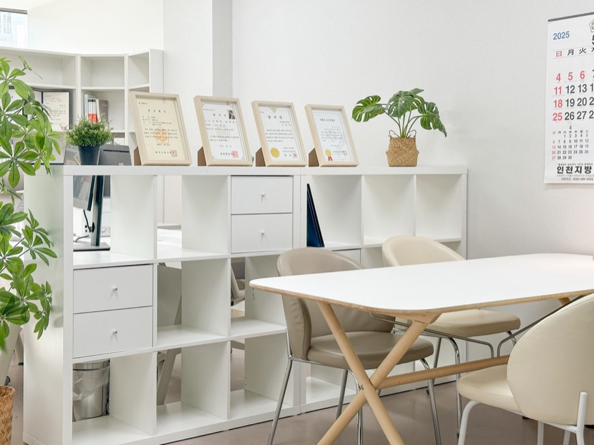
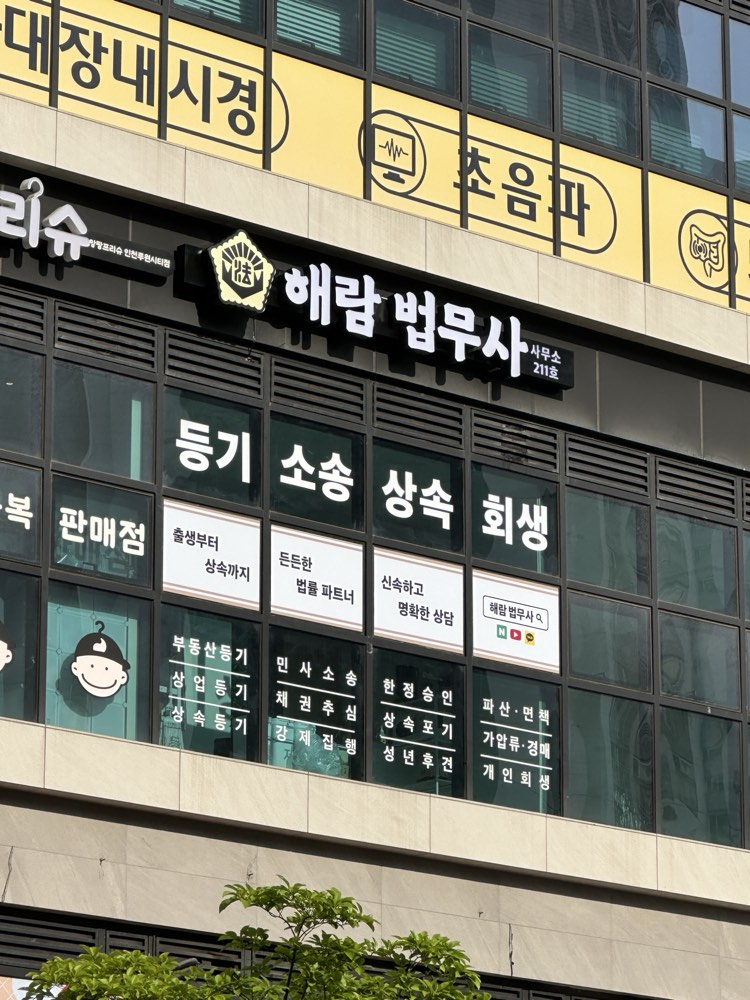

개인회생
소득으로, 갚아나갈 길.
계속되는 수입을 바탕으로 변제계획을 세웁니다.
- 계속되는 소득
- 변제계획
- 계획대로 변제
개인회생, 더 알아보기
일정한 수입이 있는 개인이 법원의 변제계획에 따라 채무를 갚고, 남은 채무의 면책을 구하는 절차입니다. 소득·생계비·재산·채무의 종류와 규모를 함께 확인합니다.
해내는 사람, 해람 법무사개인회생 · 개인파산
개인회생·개인파산, 내 상황에 필요한 길을
해람과 차근차근 살펴보세요.내 상황에 필요한 길, 함께 살펴봐요.
이름·연락처 없이 시작하는 4가지 질문
지금, 어떤 고민인가요?
그림으로 이해하는 두 가지 길
소득·재산·생활의 사정에 따라
검토할 절차가 달라집니다.
계속되는 수입을 바탕으로 변제계획을 세웁니다.
일정한 수입이 있는 개인이 법원의 변제계획에 따라 채무를 갚고, 남은 채무의 면책을 구하는 절차입니다. 소득·생계비·재산·채무의 종류와 규모를 함께 확인합니다.
상환 능력과 재산, 면책에 필요한 내용을 살핍니다.
채무를 변제할 수 없는 개인이 파산 절차로 재산을 정리하고, 별도의 면책 판단을 구하는 절차입니다. 소득 유무만으로 정해지지 않으며 면책되지 않는 채무와 불허가 사유도 확인합니다.
파산선고와 면책은 별개의 판단입니다. 실제 적용과 결과는 개별 사정 및 법원 판단에 따라 달라집니다.
한 걸음, 가볍게
정확한 금액을 몰라도 괜찮아요.
상담 준비용 질문입니다. 자격·면책을 판정하지 않으며, 답변은 저장·전송하지 않습니다.
일 잘하는 젊은 법무사
은행에서 돈의 흐름을 보던 경험으로,
지금 필요한 절차를 차근차근 짚어드립니다.
해람의 공간
상담 공간부터 해람의 작은 준비까지.

내가 어느 단계에 있는지 알 수 있도록
소득·재산·채무와
급한 고민을 확인해요.
검토할 절차와
맡길 범위를 알아봐요.
위임 범위에 맞춰
서류를 작성·제출해요.
추가 자료와
다음 할 일을 확인해요.
법무사의 법정 업무 범위 안에서 진행합니다. 위임 범위는 계약 시 확인하며, 절차와 기간은 사건·관할 법원에 따라 달라집니다.
비용은 세 가지로 나눠 확인하세요
맡기는 업무 범위
부가세·지급 조건
인지대·송달료
예납금 발생 여부
추가 비용의 기준
분납 가능 여부
HAERAM YOUTUBE
많이 궁금해하시는 이야기
소득이 계속 들어오는지, 생계비와 재산은 어느 정도인지, 채무를 갚을 수 있는지를 함께 살펴야 합니다. 제도를 미리 선택하지 않아도 됩니다. 상담할 때 현재 상황부터 말씀해주세요.
개인회생은 현재 지급불능이거나 그러한 상태가 생길 염려가 있는 경우 검토할 수 있습니다. 연체 여부 하나만으로 판단하지 않으므로, 소득·채무와 상환 상황을 함께 확인해야 합니다.
소득 유무만으로 정해지지 않습니다. 연령·건강·근로 가능성·재산·채무 경위 등 구체적인 사정을 살피며, 파산선고와 면책도 별도로 판단합니다. 일부 채무는 면책 대상에서 제외될 수 있습니다.
절차와 생활의 궁금증
신청만으로 모든 독촉이나 압류가 자동으로 멈추는 것은 아닙니다. 절차와 법원 결정, 채권의 종류에 따라 다릅니다. 받은 서류와 기한이 있다면 상담 시 먼저 알려주세요.
처음에는 대략적인 소득과 채무, 재산, 가장 걱정되는 내용을 정리해보세요. 자세한 서류는 상황을 확인한 다음 안내받으면 됩니다. 법원에서 받은 문서가 있다면 문서 이름과 기한도 함께 확인해주세요.
연락받기 편한 방법과 시간을 먼저 말씀해주세요. 다만 절차상 필요한 서류, 우편과 금융거래의 영향까지 일률적으로 비밀을 보장할 수는 없습니다. 걱정되는 부분을 상담에서 구체적으로 확인하는 것이 좋습니다.
제도 안내 참고: 대한민국 법원 개인회생 안내 ↗ · 찾기쉬운 생활법령정보 ↗

당신의 내일과 함께합니다
개인회생인지, 개인파산인지 몰라도 괜찮습니다.
지금 가장 막막한 이야기부터 들려주세요.
연락받기 편한 방법과 시간도 함께 알려주세요.